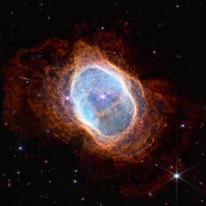

The FFT Lens
Take apart a Webb image by spatial frequency. Filter the spectrum, then inspect the image rebuilt by the inverse transform.

Low pass preserves broad glow and smooths fine detail.
of spectral energy retained
Opening the transform…